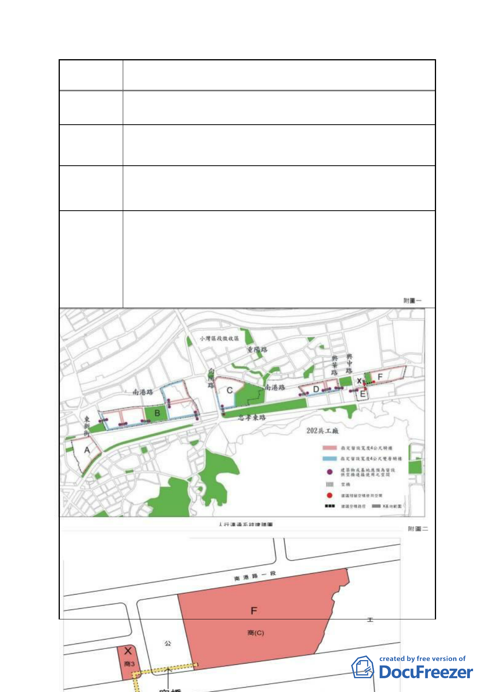

案 名 擬定臺北市南港區鐵路地下化沿線土地細部計畫案
本地區原屬工業區，向來缺乏公共設施與服務，尤其是室內型
陳情理由 3 公益性設施與文化展演空間。
建築基地提供室內型公益性設施空間，供文教、藝術展覽、表
建議辦法 3 演使用者得不計入樓地板面積。
F 區塊未被列入「都市設計管制要點」附圖 3 空橋連通區塊，
陳情理由 4 然本區鄰近主要交通設施，新生道路交通繁忙，為提昇街廓間
之聯繫功能及增進都市風貌，是否應列入指定空橋連接。
1.將 F 區塊列入「都市設計管制要點」附圖 3「人行通道系統
示意圖」指定之「建築物或基地應預為留設供空橋連接使用
之空間」及「空橋」位置。
建議辦法 4 2.建議連通方式如附圖 1、2。附圖之 X 基地與 F 區塊之僑泰
興麵粉廠屬同一地主所有。聖嘉興企業股份有限公司承諾提
供 X 基地做為空橋連通，並預留連通位置。
- 31 -